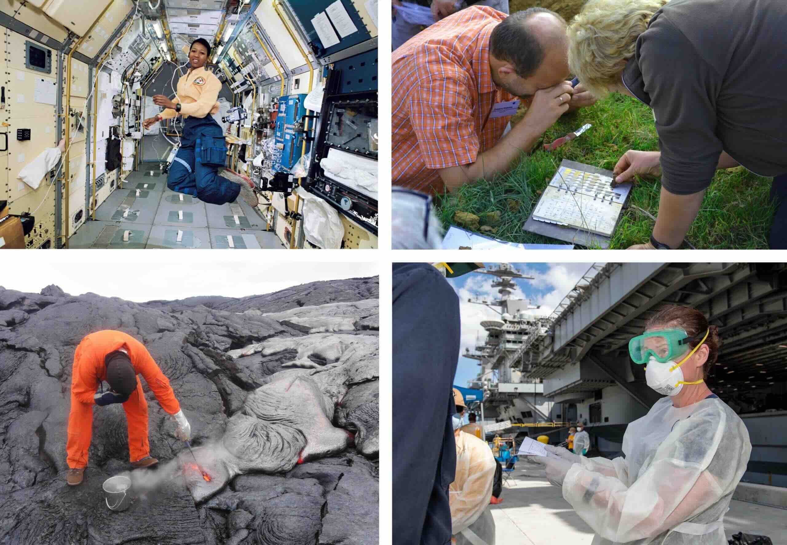
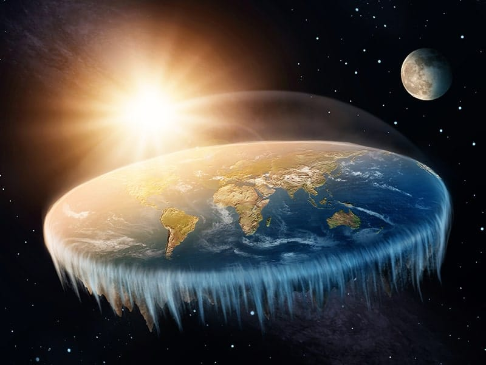
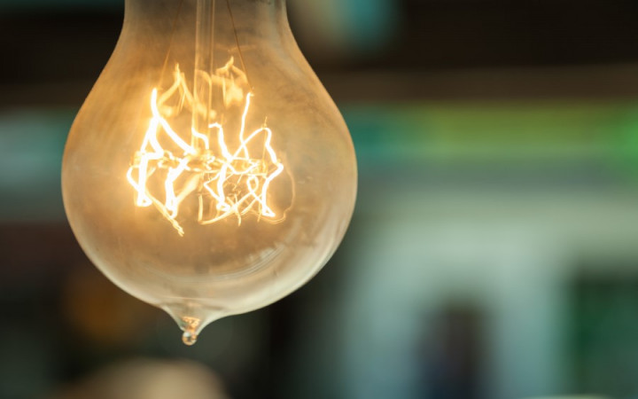
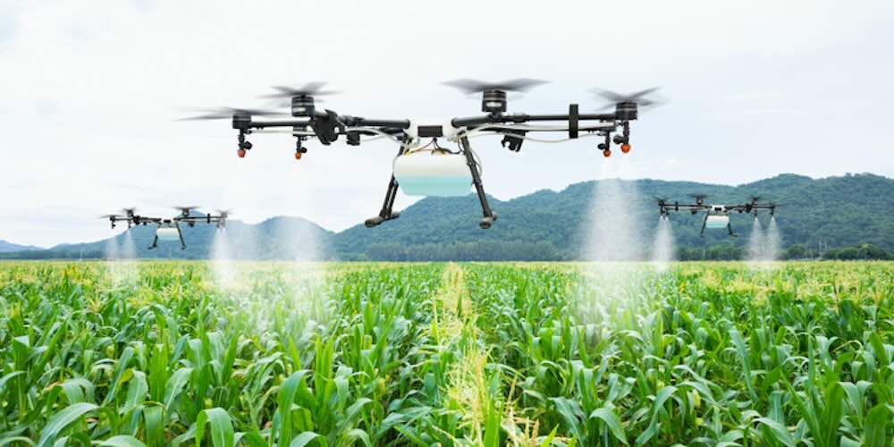

🔬 What Makes Science Special?

Science is like being a detective who solves mysteries about our world! It's the process of learning about the natural world through observation and experimentation.
🎯 Fun Fact: In science, evidence is #1! Everything we believe must be backed up with proof!
Scientists are very organized and methodical people who:
- Ask meaningful questions that can be tested
- Use specific tools and methods to study nature
- Make careful observations and record findings
- Share their discoveries with other scientists
- Read about studies done by others
Think About It: How is a scientist like a detective? What do they both need to solve mysteries?
🛠️ The Eight Scientific Practices
Scientists use eight special practices to do their work. Think of these as their superhero tools!
Real scientists working together in a laboratory, using careful methods and teamwork
- Asking questions and defining problems - What do we want to know?
- Developing and using models - How can we show what we think?
- Planning and carrying out investigations - How will we find answers?
- Analyzing and interpreting data - What do our results mean?
- Using mathematics and computational thinking - How do numbers help us?
- Constructing explanations - How can we explain what happened?
- Engaging in argument from evidence - How do we support our ideas?
- Obtaining, evaluating, and communicating information - How do we share what we learned?
🌟 Scientists don't always use all eight practices, and they don't have to follow them in exact order!
📊 Evidence and Theories
The more evidence scientists collect, the more confident they become about their ideas!
Here's how it works:
Question → Investigation → Data Collection → Analysis → Theory
If lots of data supports an idea, it might become a theory. But theories keep getting tested!
Sometimes scientists discover new evidence that changes everything! They must always be willing to:
- Examine new evidence with an open mind
- Consider other possible explanations
- Change their views when evidence shows they were wrong

❌ Old Belief
Earth was flat
This seemed reasonable at the time, but lacked scientific evidence

✅ Scientific Evidence
Earth is round!
Space exploration and scientific methods proved the truth
Historical Example: For centuries, people believed Earth was flat. Scientists found evidence that changed their minds and proved Earth is round!
🤝 Scientists Work Together
Science is a team effort! Scientists collaborate in many ways:
- Sharing findings: Scientists publish their results so others can learn
- Repeating experiments: Other scientists try the same experiments to check results
- Building on discoveries: New research builds on previous work
- Peer review: Scientists check each other's work for accuracy
- Combining expertise: Different specialists work together on complex problems

🧪 Example: Electricity wasn't discovered by just one person! Many scientists before and after worked together to understand how it works and how we can use it safely.
🎯 What IS Science vs. What is NOT Science
✅ Real Science
Astronomy: Scientific study of space using telescopes, math, and evidence

❌ Not Science
Fortune Telling: Making predictions without any scientific evidence
| Real Science ✅ |
Not Science ❌ |
| Astronomy (study of space) |
Astrology (predicting future with stars) |
| Evidence-based medicine |
Palm reading |
| Controlled experiments |
Magic tricks |
| Data collection and analysis |
Magic 8-ball predictions |
Remember: If someone makes claims without evidence, they are NOT presenting science!
🔍 Controlled Experiments
A controlled experiment is like a fair test where scientists:
- Change only one variable at a time
- Keep everything else the same
- Record all observations carefully
- Repeat the experiment multiple times
- Compare results to find patterns
Example: To test if plants grow better with more water, you would:
• Give one group of plants more water (the variable you change)
• Keep light, soil, and temperature the same for all plants
• Measure and record plant growth over time
• Compare the results between groups
📝 Documentation and Communication
Scientists must carefully document their work so others can:
- Repeat investigations: Follow the same steps to check results
- Build on research: Use findings to ask new questions
- Verify claims: Make sure the evidence supports conclusions
- Share knowledge: Help the scientific community learn
Think About It: Why is it important for scientists to write down their methods clearly? What might happen if they don't?
🌍 Real-World Applications
Science has revolutionized our world in amazing ways:

🏥 Medicine
Countless lives have been saved through scientific discoveries like vaccinations, antibiotics, and advanced medical treatments that help people stay healthy.

🌾 Agriculture
Modern farming techniques and technology like drones, GPS systems, and improved crop varieties help feed people around the world more efficiently.
⚡ Technology
Scientific discoveries in electricity, computers, and communications have completely transformed how we live, work, and connect with each other.
🚀 Space Exploration
Understanding our universe through space science has led to satellite technology, weather prediction, and countless innovations we use every day.
🎯 Problem-Solving in Science
Scientists approach problems systematically by:
- Defining criteria: What makes a good solution?
- Identifying constraints: What limitations do we have?
- Generating solutions: What are different ways to solve this?
- Testing solutions: Which one works best?
- Comparing results: How do solutions measure against criteria?
- Improving designs: How can we make it better?
Example: Reducing water waste in farming
• Criteria: Save water, maintain crop health, be cost-effective
• Constraints: Limited budget, existing equipment, climate conditions
• Solutions: Drip irrigation, soil moisture sensors, drought-resistant crops
• Testing: Compare water usage and crop yields for each method
🔄 The Iterative Nature of Science
Science is always changing and improving! Here's how:
1. Initial Discovery: Scientists make observations and form hypotheses
2. Testing: Experiments test the hypotheses
3. Analysis: Results are analyzed and shared
4. Peer Review: Other scientists check the work
5. Further Testing: More experiments refine understanding
6. New Evidence: Sometimes changes everything we thought we knew!
🔄 This cycle never ends! Science keeps getting better as we learn more.
🎓 Key Vocabulary
Science: Learning about the natural world through observation and experimentation
Controlled Experiment: A test where only one variable changes at a time
Evidence: Information that supports or contradicts a scientific claim
Theory: A well-tested explanation supported by lots of evidence
Hypothesis: A testable prediction about how something works
Variable: Something that can change in an experiment
Data: Information collected during scientific investigations
Peer Review: When scientists check each other's work
🌟 Summary: What Makes You a Scientist?
Anyone can be a scientist by being curious, asking questions, and looking for evidence!
You can be a scientist by:
- Being curious about the world around you
- Asking questions that can be tested
- Making careful observations
- Recording what you find
- Being willing to change your mind with new evidence
- Sharing your discoveries with others
- Working with others to solve problems
- Always looking for evidence to support claims
🎉 Remember: Science is everywhere! Every time you observe, question, test, and share what you learn, you're doing science!